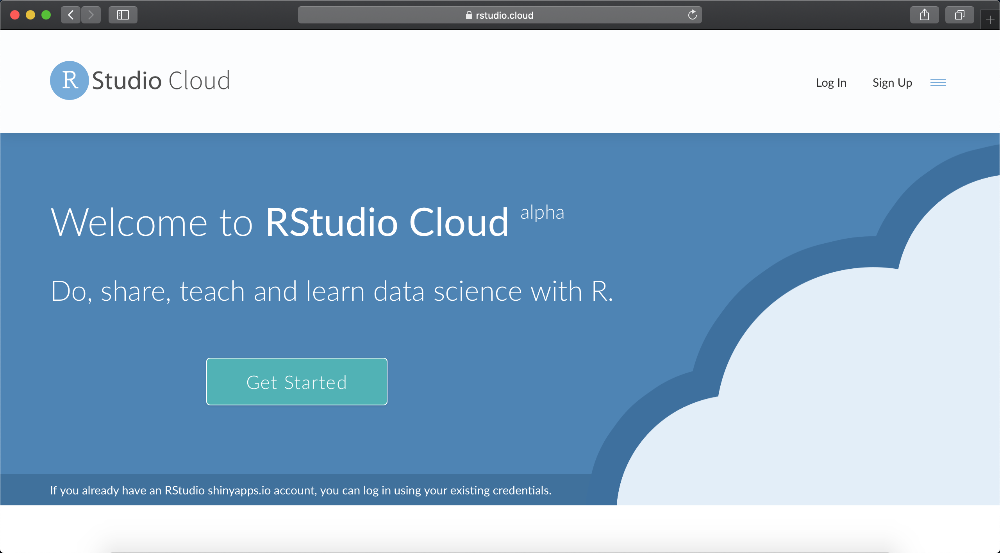
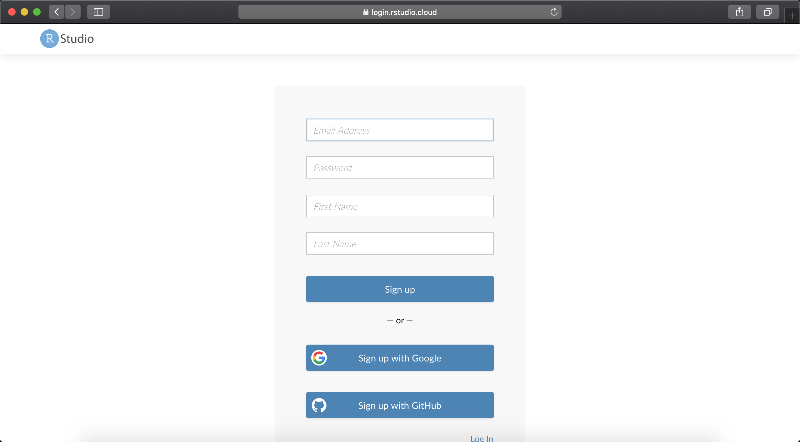
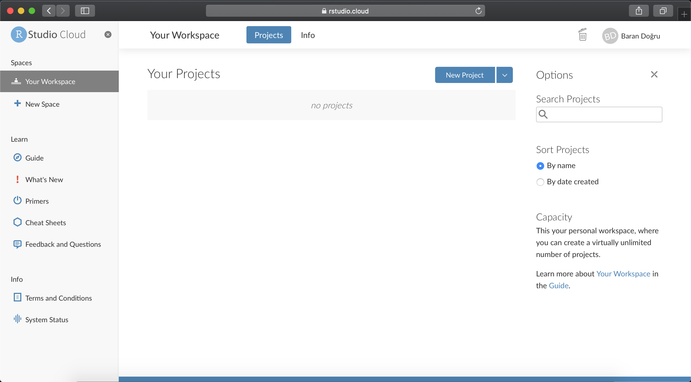
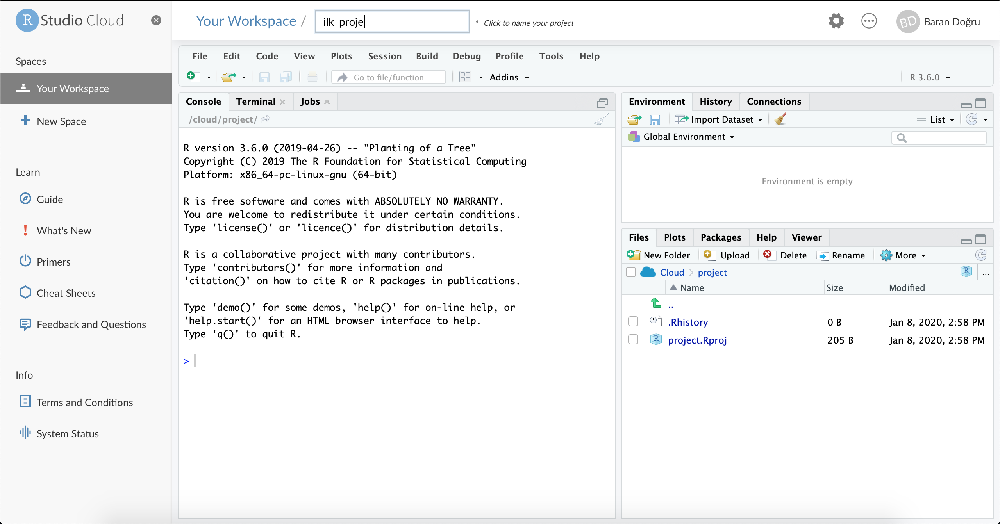
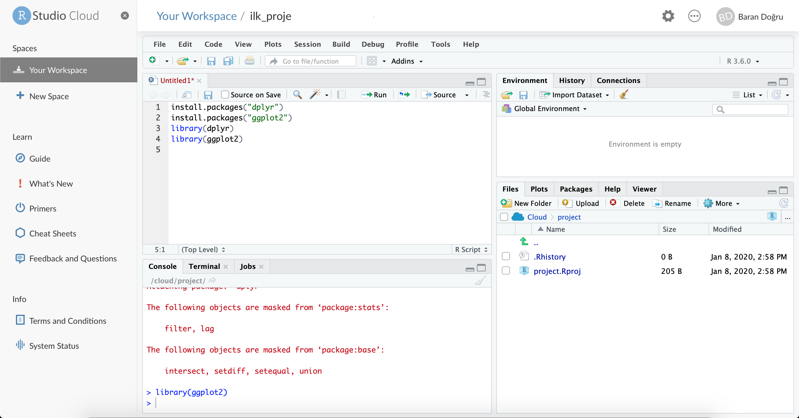

Ekler
Yazarlar Hakkında
- Baran Doğru
Baran Doğru, Boğaziçi Üniversitesi Endüstri Mühendisliği 3. sınıf öğrencisidir. Veri bilimine büyük ilgi duyan Baran Doğru Algopoly’de staj yaptığı dönemde bu dökumanın oluşturulmasında büyük pay sahibi olmuştur. Kendisine ulaşmak için LinkedIn hesabını ziyaret edebilirsiniz.
- Selçuk Can Güven
Selçuk Can Güven, Algopoly şirketinde İş Geliştirme Direktörü olarak kariyerine devam etmektedir. Bu dökümanın sektöre sunulabilir ve eğitim verilebilir hale getirilmesinde büyük katkıları olmuştur. Kendisine ulaşmak için Algopoly’nin LinkedIn hesabını ziyaret edebilirsiniz.
RStudio Cloud’da Çalışma
RStudio Cloud, R ve RStudio’yu bilgisayarınıza indirmeden çevrimiçi olarak kodlarınızı yazabileceğiniz, çalışmalarınızı is arkadaşlarınızla rahatça paylaşabileceğiniz, gerekli paketleri bilgisayarınıza yükleyip yüklemediğinizi dert etmeyeceğiniz tamamen ücretsiz bir platformdur.
RStudio Cloud’a erişmek ve platformu kullanmak için aşağıdaki adımları izleyebilirsiniz.
- Tercih ettiğiniz web tarayıcıda “RStudio Cloud” yazarak aratılınca karşınıza çıkan ilk linke tıkladığınızda bu ekranla karşılaşacaksınız. Ana ekranın sağ üst köşesindeki “Sign Up” butonuna tıklayarak kayıt ekranına ulaşın.

- Karşınıza çıkan kayıt formunu doldurun.

- Kaydınızı tamamlayın ve hesabınıza giriş yapın. Artık RStudio Cloud’u kullanmaya hazırsınız.

- İlk projenizi oluşturmak için “New Project” butonuna tıklayın.

- Açılan ilk projenize R Script dosyası eklemek için ise üstteki bardan “File”, “New File” ve “R Script” sırasıyla seçin. Artık R’da kod yazmaya hazırsınız.

Veri Seti Düzenlemeleri
Bu bölümde ilgilenenler için veri setinin ham hali elde edildikten sonra dplyr ile Veri Manipülasyonu bölümünde kullanılan haline dönüştürmek için gereken kodlar paylaşılacaktır.
# pozitif ve negatif dengesizlik sutunlarinin isimlerinin duzenlenmesi
colnames(ptfsmf)[4] = "PDF"
colnames(ptfsmf)[5] = "NDF"
# tarih ve saatin POSIX formatina cevrilmesi
ptfsmf <- ptfsmf %>% mutate(Tarih_Yeni =
as.POSIXct(ptfsmf$Tarih,format="%d.%m.%y %H:%M", "GMT")) %>%
select(Tarih_Yeni, PTF, SMF, PDF, NDF) %>%
rename(Tarih = Tarih_Yeni)
# geri kalan 4 sutunun numeric classina cevrilmesi
ptfsmf[,c(2:5)] <- lapply(ptfsmf[,c(2:5)],
function(x) as.numeric(gsub(",", ".", gsub("\\.", "", x))))Kaynakça
dplyr Paketi : dplyr CheatSheet
ggplot2 Paketi : ggplot2 Cheatsheet
Bookdown Paketi ile Kitap Oluşturma : bookdown
Veri Seti : EPİAŞ Raporlama Sayfası
Piyasa Hakkında : Türkiye Elektrik Piyasası